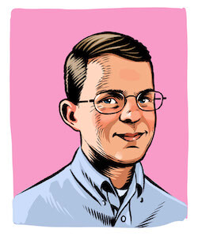

A Search for the Heart
Digital collections, machine learning and legacies of care
By Jer Thorp & Jonathan Ashley for LC Labs
In 2018, The Library of Congress released its first agency-wide digital
strategy. At the center of the document was a promise: to throw open the
“treasure chest”. The Library’s digital holdings add up to nearly 200
petabytes. Photographs, films, source, code, recipes, architectural
drawings, websites, newspapers, and digital recordings made from wax
cylinders.
With the 2018-2023 digital strategy, the Library would grow these digital
holdings exponentially, ramping up digitization work and bolstering
born-digital collections. The plan would also see many more of materials
made available online, continuing decades of digitization and extending ways for anyone to access and download materials from the cloud.
As an institution, the LOC had long served people who visited in person,
unrolling maps and spreading out books on the tables of its twenty
reading rooms and research centers. Now a different need was emerging, people who wanted API keys instead of Reader ID cards and server space more than desk space.
Educators like Jackie Katz.
Katz is a New Jersey high school science teacher who uses STEM primary sources in the classroom. She learned the Library had the papers of Nina Fedoroff - a famous microbiologist and geneticist. Katz collaborated with archivists in the Library’s Manuscript Division to emulate Fedoroff’s old software from the 80s and 90s, unlocking some of her original field research spreadsheets, DNA sequences, and microscope images.
Artists like Jeffrey Yoo Warren.
Yoo Warren, an artist and educator in Rhode Island, used archival photos, maps, and records from the LOC collection to build “hidden portals”, immersive 3D reconstructions of historic Chinese American and Korean American communities. These GPS-based reconstructions can only be experienced in the geographic locations where these communities once existed, offering a reminder of how many histories have been hidden in plain sight.
Scholars like Lincoln Mullen.

A historian of American Religion, Mullen uses computational methods to
analyze text and music. For his project America’s Public Bible, Mullen
wrote code to process millions of newspaper pages from the LOC’s
collection, looking for bible quotes. The project uncovers trends and
patterns in these citations, on a scale that would be invisible to
scholars using non-computational approaches.
A year after the release of the Digital Strategy, the Library invited
Mullen and two other researchers - Lauren Tilton and Andromeda Yelton -
to take part in a case study project called Computing Cultural History
in the Cloud (CCHC). The goal was to figure out just exactly how the
Library’s treasure chest would be thrown open: how the library could
serve computational research requests while being realistic about its
institutional capabilities, and mindful of potential risks and harms.
The CCHC project started off centered on mostly technical concerns:
What data formats were most useful to researchers?
Could the library offer computing resources to help with data analysis?
What staffing changes would be needed to support these new kinds of requests?
Yelton, Tilton and Mullen got to work. They pulled data and coded
frameworks, designed interfaces and sharpened research questions.
Watching their work closely, the CCHC staff gleaned valuable insights.
They learned, for example, that digital researchers were likely to come
to the Library with their own frameworks, workflows, and software
stacks. The researchers wanted the modes of access to the data to be
robust and well documented, but they weren’t overly concerned with the
format the data came to them in. There was no one-size-fits-all answer
to their technical needs, no file format or delivery method that would
work for each of them, let alone for tens of thousands of potential new
Library users.
For Chefs looking for historic African American recipes.
That last one is me.
When I came to Washington for my first day as Innovator in Residence in
2017, I was prepared with a stack of ideas of how I’d use the Library’s
data. I was enamored by the scale of it all: hundreds of thousands
photographs, three centuries of catalogue records, two city blocks of
flat file cabinets filled with maps. Like the CCHC researchers I came
with my own tools, sharpened and ready.
Over the eighteen months I spent there, I’d learned one very important
thing. I learned it over and over, in different ways. It’s something
that you’ll learn too if you spend enough time in the treasure chest.
You’ll learn it from from rare codexes, from web archives, from FORTRAN
code on floppy disks. Even more so, you’ll learn it from librarians and
archivists and historians. You’ll find it right at the heart of the
CCHC’s findings and in the meaningful data packages the Library is
releasing:
That the Library’s data shouldn’t be - that it can’t be - separated from
its context.
That meaning comes from place
and time
and people.
That scale is nothing without story.
Here is a story.
The Computing Cultural Heritage for the Cloud project wrapped up in 2023.
One of the central outcomes of the project was the design of meaningful data packages, which bring together context and technical information designed to help people understand the potential computational uses of the Library’s materials. The packages combine normalized metadata, metadata enrichments, media files, standardized documentation, narrative context, and other usability features such as code samples and notebooks.
To learn more about these data packages and to find out when new ones are released, visit data.labs.loc.gov, a new and improved space for discovering and using exploratory Library data.
In 2023, the Library released a new strategic plan, for the first time incorporating digital strategy throughout. A fundamental goal of the new strategy is to better understand and meet the needs of the Library’s users; to better serve not only its existing user base, but also to reach new communities.
What new ways are you dreaming up to use the Library's materials? We'd love to hear from you.
Jack Delano died in 1997 in Puerto Rico. He was 83.
His casket lay in state in the capitol building in San Juan.